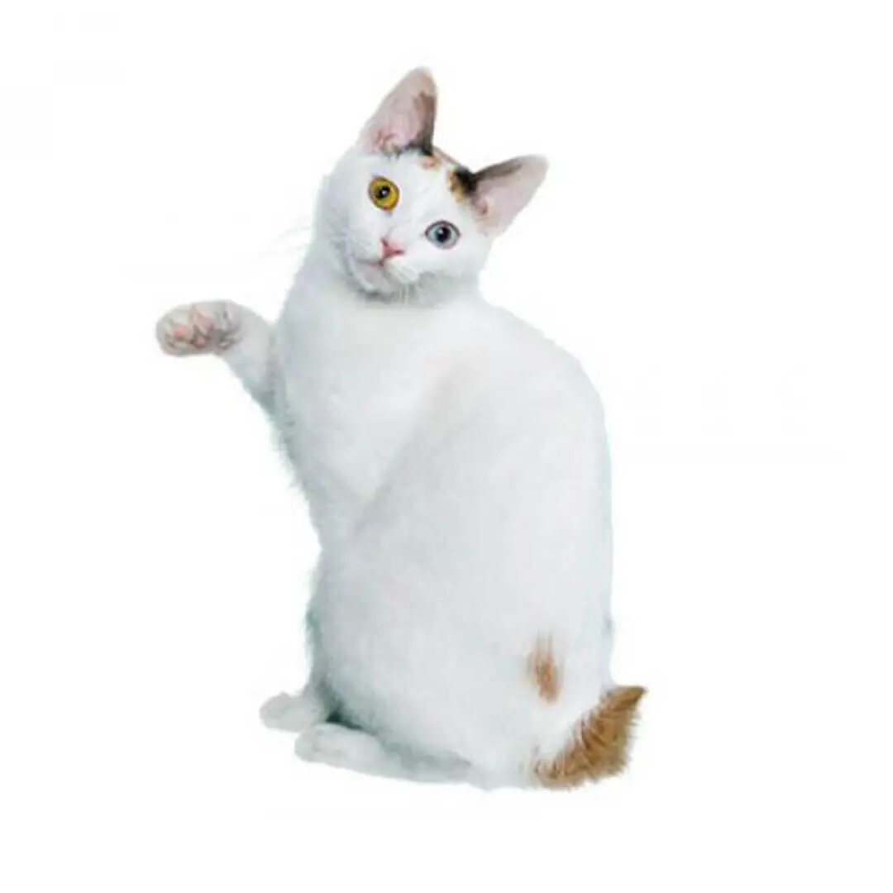
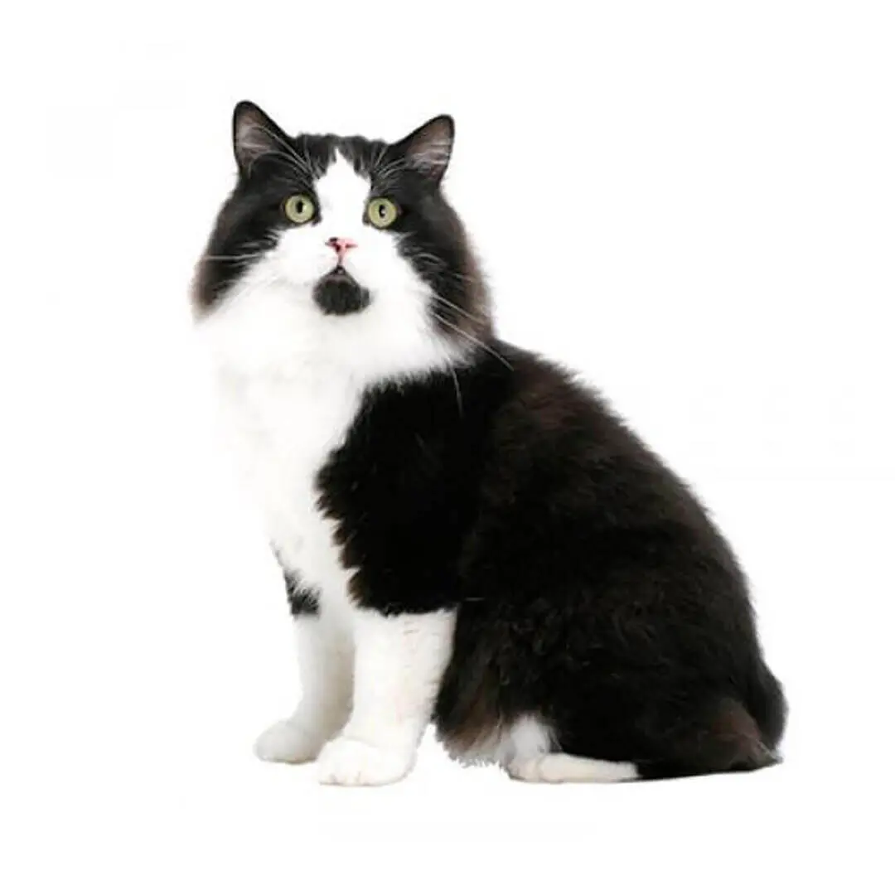
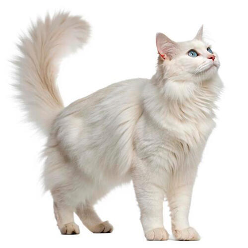
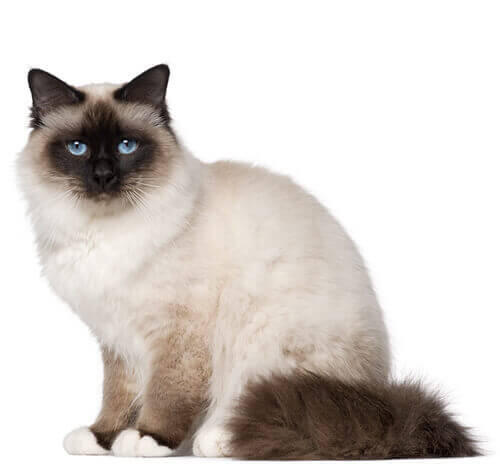
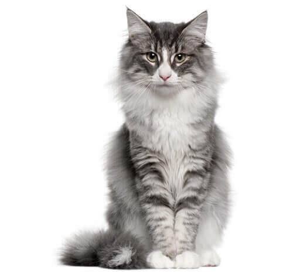
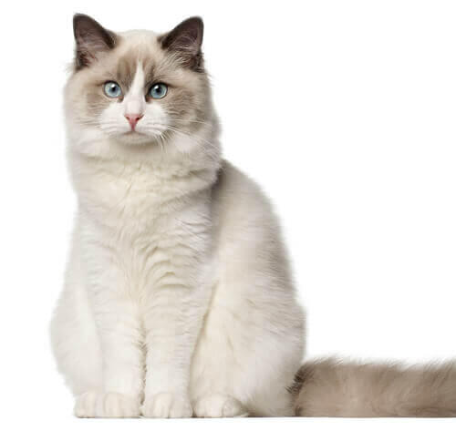
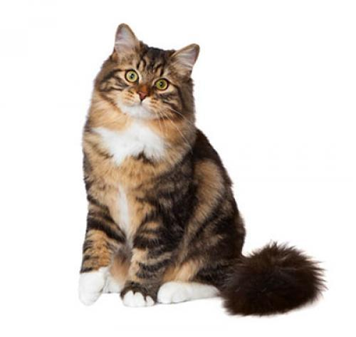

El bobtail japonés tiene una forma elegante y una musculatura bien desarrollada...

Los gatos cymric pueden llegar a saltar como los conejos por una deformidad de la columna...

El Gato Angora Turco es una de las razas felinas más antiguas y elegantes del mundo. Originario de Turquía, este gato destaca por su pelaje sedoso, su carácter juguetón y su inteligencia excepcional. A continuación, te contamos todo sobre el Gato Angora Turco, desde su apariencia y personalidad hasta consejos para su cuidado.

El birmano, o gato sagrado de birmania, es un gato de pelo semilargo de color más oscuro hacia las marcas distales, la cara, las patas, las orejas y la cola, y algo más claro en el resto del cuerpo. Es un gato relativamente grande, con un cuerpo rechoncho y de patas cortas.

Leyenda mítica descendiente de felinos guerreros, el gato bosque de Noruega es asombrosamente bello y su personalidad va a juego. Es afectuoso, tranquilo y se adapta fácilmente a la vida familiar. Es un gato muy mimoso que siempre tiene ganas de hacer nuevos amigos.

El ragdoll es un gato dócil y dulce, igualmente popular entre las familias que en hogares unipersonales a causa de su comportamiento amable y su naturaleza tranquila. No tendrá ningún problema en asumir el papel de «mejor amigo» con cualquier persona, y le encantará pasar el día jugando con sus dueños.

El gato siberiano es un animal afectuoso y leal que resulta un gran compañero, ya que se lleva realmente bien con todo el mundo, incluidos niños y otras mascotas. Además de su aspecto imponente, le encantan los arrumacos. Tiene una personalidad tan dulce que hace que quieras tenerlo cerca todo el rato.